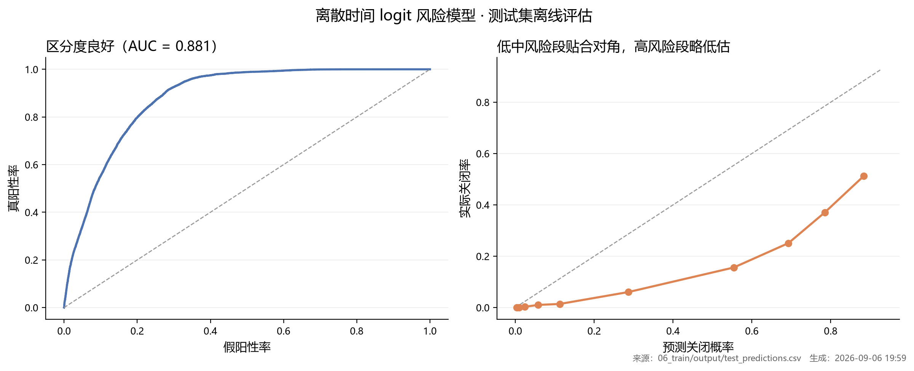
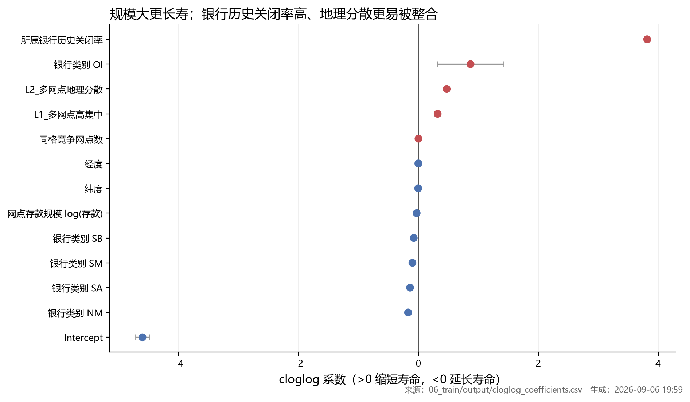

模型体检报告 · 准，但没那么准
年份效应 + 因子森林（均带 95% CI）+ 性能指标 + 残差空间自相关。
这一页回答「模型够不够用」。结论是：区分度很好，但残差里还有东西没解释。
测试 AUC0.8814区分度（仅同口径可比）
C-index0.8096排序一致性
Brier0.1609越低越好
事件率13.78%测试 n=100,000
① 什么时候最危险：年份效应
② 非年份因子：谁延长、谁缩短寿命
主导因子 · bank_closed_rate
系数 3.8156 95% CI [3.773, 3.858]
量级是其余因子的 4–100 倍，因此在下方森林图里单独列出，避免把其它因子压平。
③ 残差诊断：还有空间结构没进模型
残差 Moran's I = 0.141（p = 0.005，k = 8，置换 199 次，n = 341,019）显著为正 → 控制银行与年份之后，本地市场条件仍然聚集（县域经济、竞争密度变化等未进入模型）。因此点估计不可解释为「网点自身属性的完整效应」。
④ 上游静态产物（同一口径）

上游 ⑦：ROC 与校准曲线（区分度良好，高危段概率略低估）

上游 ⑦：cloglog 系数森林（同一口径的静态版）
⑤ 已知限制（摘要，完整版见「边界与止损」）
限制 1**左截断**：面板自 1994 起，出生早于 1994（或出生年缺失）的网点按左截断处理，已剔除事件早于首次观测的 11,787 个网点；网点年龄分布因此左偏，不宜直接读「年龄效应」。
限制 2**死亡年口径**：SIMS_ACQUIRED_DATE 只在并购当年（及之后若干年）出现，按「该网点出现过的最晚年份」判定死亡；若某年补录口径变化会改变关闭率。
限制 3**CERT 归属**：银行层脆弱性按**首次观测所属银行**聚合（并购后不追溯重标），因此并购后关闭的网点仍计入原银行，银行层指标是基线属性而非时变属性。
限制 4**右删失 47%**：近半数网点在 2025 年仍存活，长寿命区间的 KM 曲线受样本量限制，尾部不确定。
限制 5**事件率低（4.13%）**：logit 训练做了保留全部事件行的分层下采样（50 万 / 20 万），AUC/C-index 的绝对值随抽样比例变化，跨口径比较需固定抽样。